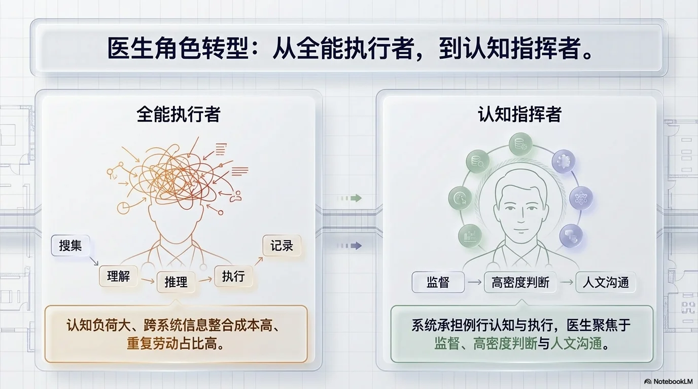

产品矩阵
覆盖临床、影像、信息三大科室的 8 个核心产品

🏥 临床科室
📡 影像科室
💻 信息科室
告别单点 AI 插件，构建系统级医疗人工智能。RimagAi 基于自主研发的 MCOS 六层架构，将大模型能力、合规约束与数据资产编织进临床、影像、信息三大科室的真实工作流。
L1-L4 构成前向运行链路，L5 横切治理，L6 负责持续进化
MCOS 不是 HIS/EMR/PACS 本身，也不是某个大模型的别名，而是把多种 AI 能力组织进临床工作流的系统层。 了解更多 →
位于医院现有系统与 AI 能力之间，不替代，而是组织
HIS / EMR / PACS / RIS / LIS
挂号、收费、医嘱、阅片、存储
已有业务流程与数据资产
场景感知 · 上下文组织
推理调度 · 执行控制
治理约束 · 持续进化
医疗大模型 / 通用 LLM
规则引擎 / 知识库
工具调用 / Agent Harness

覆盖临床、影像、信息三大科室的 8 个核心产品
没有治理层，MCOS 只是能力系统；有了治理层，才是可落地的临床辅助系统
核心数据不出院墙，敏感计算端侧优先。支持国产算力本地模型私有化部署。
非侵入式对接 HIS / EMR / PACS / RIS / LIS，提供平滑的工作流改造路径。
所有 AI 生成操作可追溯，决策路径透明。规则引擎干预作为确定性兜底。
知识、工具和业务规则以组织级维度沉淀，不依赖特定模型平台锁定。